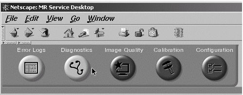
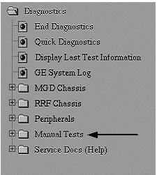
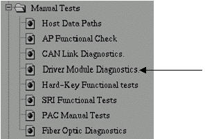
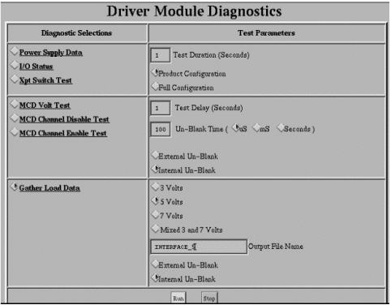
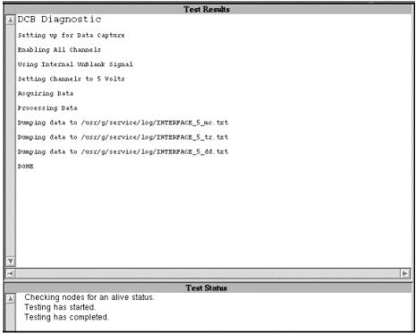

Operating Documentation
Direction 5133315-3, Rev# 14
Signa EXCITE HD 1.5T Service Methods
Module Version 1.0, Version Date 4/27/07
Operating Documentation |
| Required Persons | Preliminary Reqs | Procedure | Finalization |
|---|---|---|---|
| 1 |
| NOTE: | End the exam if an exam is currently active. |
Drive the patient cradle to the home position and remove any coil on the cradle.
On the Service Desktop, open the Service Browser if it is not already running.
Click the Diagnostics button as shown in Illustration 1.
Illustration 1: Diagnostics Button

On the Diagnostics tab, click the Manual Tests folder as shown in Illustration 2.
Illustration 2: Manual Tests

Click Drive Module Diagnostics as shown in Illustration 3.
Illustration 3: Driver Module Diagnostics

Select [Gather Load Data] as shown in Illustration 4.
Illustration 4: Gather Load Data

Select [5 Volts] and type <INTERFACE_5> in the Output File Name field, as shown in Illustration 4. Also select [Internal Un-Blank].
Press the [Run] button. Test results and status will be displayed as shown in Illustration 5.
| NOTE: | Place the cursor in the Test Status frame and move it slightly while the test is running. Otherwise the “Testing has completed” message will never appear. The output file is not actually written until the “Testing has completed” message appears. |
Note the path and file name of the result file, as shown in Illustration 5
Illustration 5: Status

Repeat steps 8 through 10 with the [7 Volts] button selected, then type <INTERFACE_7> in the Output File Name field.
Connect the phased array coil to be tested to the coil interface.
Perform steps 8 through 11 using a name appropriate for the coil that is connected. For example, if a previously untested phased array is connected, NEWCOIL_5 might be entered in the Output Filename field for the 5-volt run and NEWCOIL_7 then should be entered for the 7-volt pass.
Examples will be presented for three cases in the following section for USCTLTOP, NEWCOIL, and PVARRAY.
No finalization steps.